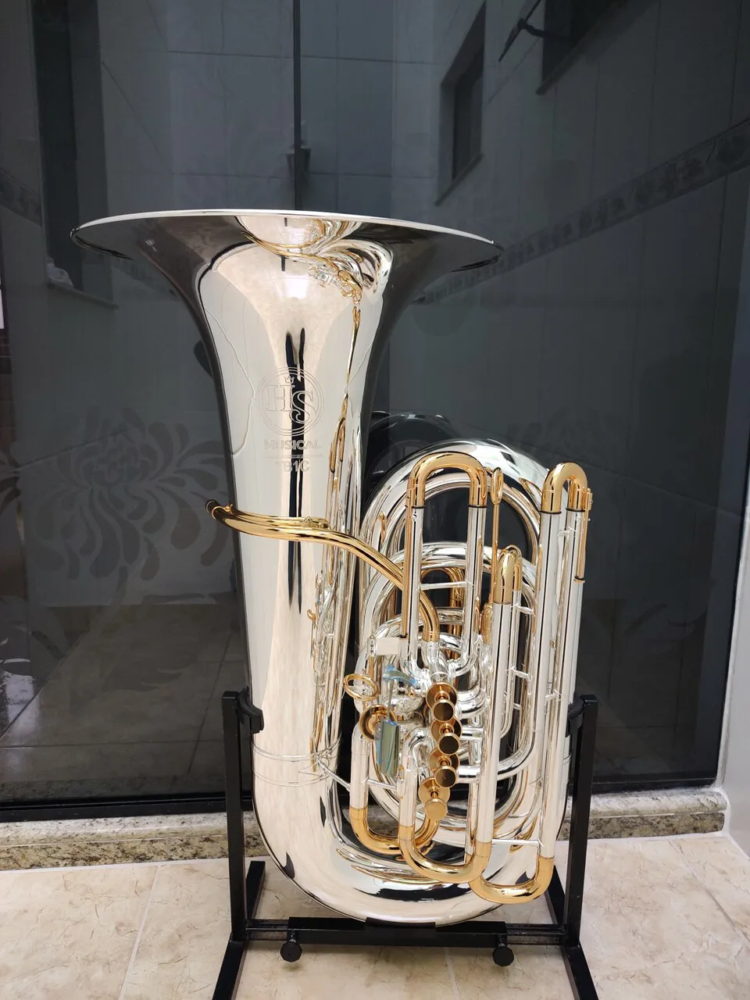

| TUBA 5/4

|
Tuba 5/4 Prata 4 Pistos + 1 ROTOR produto HSMusical |
CamaraInstrumentos |
|
CAPA PARA TUBA

|
Uma bela capa para tuba de pvc emborrachado produto oficial JUPITER |
JUPITER MUSIC |
|
SUPORTE PARA TUBA

|
O Suporte para Tuba Performer oferece conforto e estabilidade para tubas e barítonos |
HERCULES |
|
MUTE PARA TUBA

|
Acessório que reduz o volume do som sem comprometer a entonação. Essencial para estudo em casa e ensaios noturnos. |
Denis Wick |
|
AFINADOR E METRÔNOMO

|
Ferramenta compacta e essencial para garantir a afinação correta e o tempo de estudo. Possui display iluminado. |
KORG |
|
BOCAL

|
Bocal Para Tuba Padovani Standard + Brinde Flanela - Loja |
PADOVANI |
|
LUBRIFICANTE

|
Óleo Lubrificante Para Pisto Yamaha Superior Vintage 60ml |
YAMAHA |
|
ESTANTE DE PARITURA MUSICAL

|
Suporte Estante Partitura Musical Maestro Bertô MS-22M Concerto Reforçado Tripé Apoiador Igreja Pulpito |
Musical Maestro Bertô MS-22M |
|
MÉTODO DE TUBA

|
Método Prático Para Tubas Eufonios E Trombones - Almeida Dias |
Almeida Dias |
|
SOUZAFONE

|
Sousafone Yamaha Ysh411 Ysh-411 Sib |
YAMAHA |
|